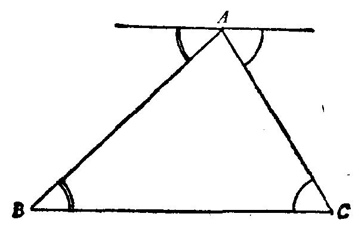

我们不防带点夸张地说：人类是从一个人和一本书(即欧几里得和他所写
的《几何原本》)学到这个概念的。无论如何，学习平面几何原理提供了得到严
格证明这一概念的迄今最好的机会。
我们把下列定理的证明作为一例：在任何一个三角形中，三角之和等于两
个直角。图23是我们大多数人已有的知识，只须稍加解释。过顶点 A 作一直线平
行于边 BC 。由于内错角相等，三角形中在 B 角与 C 角等于图上所指出的在 A点的
某一个角。三角形的三个角与具有一公共点 A 的三个角相等，后者形成一平角或
两个直角。于是定理得证。
图23
如果一个学生学过数学课，而并不真正懂得几个象上面那样的证明，他有
权向学校和教师提出尖锐批评。事实上，我们应当分清什么是较重要和什么是
不那么重要的。如果学生不熟悉某个具体的几何事实，他的损失并不大；因为
在他今后的生活中很少用到这些事实。然而如果他未能熟悉几何证明，他损失
的却是“真实证据”的最佳与最简单的例子，并且他也损失了获得严格论证概
念的良机。而没有这种概念，他就缺少一种真正的标准来比较现代生活中针对
他的各式各样的所谓证据。
总之，如果普通教育打算给学生以直观证明与逻辑论证的概念，那么就必
须重视几何证明。
(2)逻辑系统。几何学，正如欧几里得《几何原本》所表明的那样，并非
仅仅是事实的一种汇集而是一个逻辑系统。公理、定义和命题不是按随便(随机)
的序列排列的，而是按一种完美的顺序安排的。每一命题都这样安排，使得它
能以前面的定理、定义与命题为基础。我们可以把命题的这种安排看作是欧几
里得的主要成就，并把它们所组成的逻辑系统看作是《几何原本》一书的主要
优点。
欧几里得的几何学还不仅是一个逻辑系统，它还是这类系统的第一个和最
伟大的范例，其他的科学已经并且将继续尝试去模仿它。其他科学——特别是
那些离几何特别远的学科，如心理学、法学——是否应该模仿欧几里得的严格
逻辑呢?这是个可辩论的问题；但是，一个人若不熟悉这种欧几里得系统，他便
没有能力参加这种辩论。
现在，几何体系是通过证明的“粘合”而成的。每个命题与其前面的公理、
定义以及命题借助于一个证明而联系起来。不了解这种证明，就无法了解这体
系的本质。